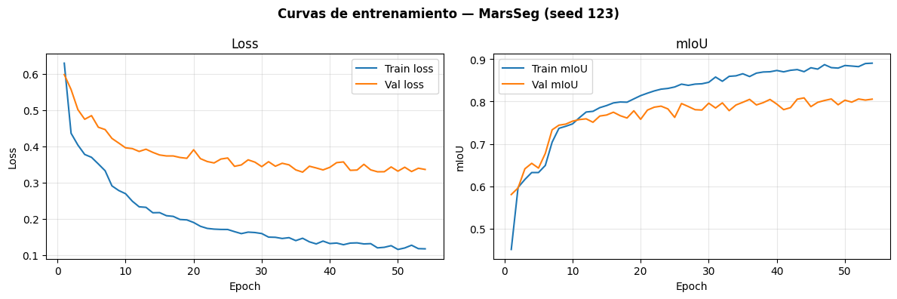
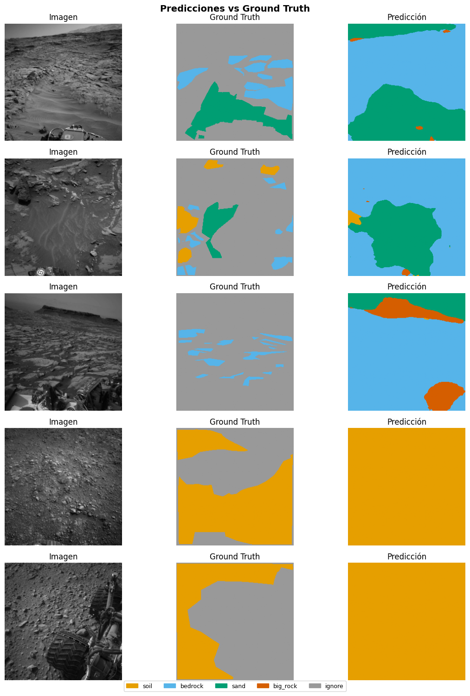

05c — MarsSeg (ResNet-50 + MiniASPP + PSA + SPPM)#
Paper: Li et al. — MarsSeg: Mars Surface Semantic Segmentation with Multi-level Extractor and Connector
arXiv: 2404.04155 — Beihang University, 2024
Arquitectura: Encoder-decoder basado en ResNet-50 con 3 módulos de mejora de características:
Mini-ASPP: captura detalles locales multi-escala en features superficiales
PSA (Polarized Self-Attention): dependencias globales canal + espacio
SPPM (Strip Pyramid Pooling Module): información semántica de alto nivel
layer4 con dilation=2 para no reducir resolución espacial
Advertencia: Alta varianza en big_rock (±0.054) — el más inestable de los 5 modelos. Supervisar las 3 seeds.
0. Setup#
import os, sys
from pathlib import Path
IN_COLAB = 'google.colab' in sys.modules
if IN_COLAB:
from google.colab import drive
drive.mount('/content/drive')
PROJECT_ROOT = Path('/content/drive/MyDrive/ai4mars_DL-v3')
sys.path.append(str(PROJECT_ROOT / 'notebooks'))
else:
PROJECT_ROOT = Path('__file__').resolve().parent.parent
if not (PROJECT_ROOT / 'processed').exists():
PROJECT_ROOT = Path.cwd().parent
print(f'ROOT: {PROJECT_ROOT} | existe: {PROJECT_ROOT.exists()}')
ROOT: C:\Users\mateo\ai4mars_DL-v3 | existe: True
import torch
import torch.nn as nn
import torch.nn.functional as F
from torchvision.models import resnet50, ResNet50_Weights
import numpy as np
import matplotlib.pyplot as plt
from mars_utils import (
set_seed, load_norm_stats, load_split,
build_dataloaders, FocalDiceLoss,
train_one_epoch, evaluate, train_model, run_multi_seed,
append_benchmark_results, plot_best_seed_curves,
print_summary_table, visualize_predictions, count_parameters,
NUM_CLASSES, IGNORE_INDEX, SEEDS
)
DEVICE = torch.device('cuda' if torch.cuda.is_available() else 'cpu')
print(f'Device: {DEVICE}')
if DEVICE.type == 'cuda':
print(f'GPU: {torch.cuda.get_device_name(0)}')
Device: cuda
GPU: NVIDIA GeForce RTX 3050 6GB Laptop GPU
1. Configuración#
MODEL_NAME = 'MarsSeg'
FAST_SUBSET = False # ← True para prueba rápida (~2 min/seed)
LR = 0.001
MOMENTUM = 0.9
WEIGHT_DECAY = 1e-4
MAX_EPOCHS = 80
PATIENCE = 10
BATCH_SIZE = 32-
FOCAL_ALPHA = 0.25
FOCAL_GAMMA = 2.0
print(f'Modo: {"FAST SUBSET" if FAST_SUBSET else "PRODUCCIÓN"}')
Modo: PRODUCCIÓN
2. Datos#
df_train, df_val, df_gold = load_split()
mean, std = load_norm_stats()
# ← columna 'stem' no existe en el df; derivarla de image_path
train_ids = set(Path(p).stem for p in df_train['image_path'])
gold_ids = set(Path(p).stem for p in df_gold['image_path'])
assert len(train_ids & gold_ids) == 0, '⚠️ DATA LEAKAGE detectado'
print(f'✅ Train: {len(df_train)} | Val: {len(df_val)} | Gold: {len(df_gold)}')
print(f'Normalización — mean: {mean} | std: {std}')
✅ Split cargado — train: 4200 | val: 1800 | gold test: 322
✅ Train: 4200 | Val: 1800 | Gold: 322
Normalización — mean: [0.2303263779898021, 0.2303263779898021, 0.2303263779898021] | std: [0.10591342097577364, 0.10591342097577364, 0.10591342097577364]
3. Arquitectura — MarsSeg#
3.1 Módulos de mejora de características#
class MiniASPP(nn.Module):
"""
Mini Atrous Spatial Pyramid Pooling.
3 ramas de convolución dilatada (rates 1,1,2) para capturar
representaciones multi-escala locales de forma eficiente.
Diseñado para feature maps de alta resolución (superficiales).
"""
def __init__(self, in_channels: int, out_channels: int):
super().__init__()
mid = out_channels // 3
self.branch1 = nn.Sequential(
nn.Conv2d(in_channels, mid, 1, bias=False),
nn.BatchNorm2d(mid), nn.ReLU(inplace=True)
)
self.branch2 = nn.Sequential(
nn.Conv2d(in_channels, mid, 3, padding=1, dilation=1, bias=False),
nn.BatchNorm2d(mid), nn.ReLU(inplace=True)
)
self.branch3 = nn.Sequential(
nn.Conv2d(in_channels, mid, 3, padding=2, dilation=2, bias=False),
nn.BatchNorm2d(mid), nn.ReLU(inplace=True)
)
# Ajuste de canales tras concatenación
concat_ch = mid * 3
self.fuse = nn.Sequential(
nn.Conv2d(concat_ch, out_channels, 1, bias=False),
nn.BatchNorm2d(out_channels), nn.ReLU(inplace=True)
)
def forward(self, x):
b1 = self.branch1(x)
b2 = self.branch2(x)
b3 = self.branch3(x)
return self.fuse(torch.cat([b1, b2, b3], dim=1))
class PolarizedSelfAttention(nn.Module):
"""
Polarized Self-Attention (PSA).
Atiende tanto a la dimensión de canal como a la espacial
mediante auto-atención ligera paralela.
"""
def __init__(self, channels: int):
super().__init__()
self.ch_half = channels // 2
# Rama canal
self.ch_q = nn.Conv2d(channels, self.ch_half, 1)
self.ch_v = nn.Conv2d(channels, self.ch_half, 1)
# Rama espacial
self.sp_q = nn.Conv2d(channels, 1, 1)
self.sp_v = nn.Conv2d(channels, self.ch_half, 1)
self.norm_ch = nn.LayerNorm([self.ch_half, 1, 1])
self.fuse = nn.Conv2d(self.ch_half, channels, 1)
def forward(self, x):
B, C, H, W = x.shape
# Atención de canal
q_ch = self.ch_q(x).reshape(B, self.ch_half, -1) # (B, C/2, HW)
v_ch = self.ch_v(x).reshape(B, self.ch_half, -1) # (B, C/2, HW)
attn_ch = F.softmax(q_ch, dim=-1) # (B, C/2, HW)
ch_out = (v_ch * attn_ch).sum(dim=-1, keepdim=True) # (B, C/2, 1)
ch_out = ch_out.unsqueeze(-1) # (B, C/2, 1, 1)
ch_out = torch.sigmoid(self.norm_ch(ch_out)) # (B, C/2, 1, 1)
# Atención espacial
q_sp = self.sp_q(x).reshape(B, 1, -1) # (B, 1, HW)
v_sp = self.sp_v(x).reshape(B, self.ch_half, -1) # (B, C/2, HW)
attn_sp = F.softmax(q_sp, dim=-1) # (B, 1, HW)
sp_out = (v_sp * attn_sp).sum(dim=-1) # (B, C/2)
sp_out = torch.sigmoid(sp_out).reshape(B, self.ch_half, 1, 1) # (B, C/2, 1, 1)
# Combinar y proyectar
combined = ch_out * sp_out # (B, C/2, 1, 1)
return x + self.fuse(combined)
class SPPM(nn.Module):
"""
Strip Pyramid Pooling Module.
Combina pooling global multi-escala (1×1, 2×2, 4×4, 8×8) con
pooling en franja (1×W y H×1) para capturar información semántica
de categorías a múltiples escalas, incluido terreno en franja.
"""
def __init__(self, in_channels: int, out_channels: int):
super().__init__()
# Reducción de canales antes del pooling
self.reduce = nn.Sequential(
nn.Conv2d(in_channels, out_channels, 1, bias=False),
nn.BatchNorm2d(out_channels), nn.ReLU(inplace=True)
)
# Ramas de pooling multi-escala
self.pools = nn.ModuleList([
nn.AdaptiveAvgPool2d(s) for s in [1, 2, 4, 8]
])
n_branches = len(self.pools) + 2 # +2 por strip H y W
self.fuse = nn.Sequential(
nn.Conv2d(out_channels * (1 + n_branches), out_channels, 1, bias=False),
nn.BatchNorm2d(out_channels), nn.ReLU(inplace=True)
)
def forward(self, x):
x_r = self.reduce(x)
H, W = x_r.shape[-2:]
parts = [x_r]
for pool in self.pools:
parts.append(
F.interpolate(pool(x_r), size=(H, W), mode='bilinear', align_corners=False)
)
# Strip pooling H y W
strip_h = F.adaptive_avg_pool2d(x_r, (1, W))
strip_w = F.adaptive_avg_pool2d(x_r, (H, 1))
parts.append(F.interpolate(strip_h, (H, W), mode='bilinear', align_corners=False))
parts.append(F.interpolate(strip_w, (H, W), mode='bilinear', align_corners=False))
return self.fuse(torch.cat(parts, dim=1))
class MarsSeg(nn.Module):
"""
MarsSeg: encoder-decoder con ResNet-50 y capas de mejora de características.
Flujo:
Input [B,3,256,256]
↓ ResNet-50 layer1 (C=256, H/4×W/4) → MiniASPP + PSA → feat1
↓ ResNet-50 layer2 (C=512, H/8×W/8) → MiniASPP + PSA → feat2
↓ ResNet-50 layer3 (C=1024, H/16×W/16) → MiniASPP + PSA → feat3
↓ ResNet-50 layer4 (C=2048, dilation=2, H/16×W/16) → SPPM → feat4
↓ Decoder: upsample + concat + conv × 2 → logits [B,4,256,256]
Solo se usan los 3 primeros feature maps (shallow) con dilation en layer4.
"""
def __init__(self, num_classes: int = 4):
super().__init__()
# --- Encoder: ResNet-50 con dilation en layer4 ---
backbone = resnet50(weights=ResNet50_Weights.DEFAULT)
self.layer0 = nn.Sequential(backbone.conv1, backbone.bn1,
backbone.relu, backbone.maxpool)
self.layer1 = backbone.layer1 # out: 256ch, H/4
self.layer2 = backbone.layer2 # out: 512ch, H/8
self.layer3 = backbone.layer3 # out: 1024ch, H/16
# layer4 con dilation=2 para mantener resolución H/16
self.layer4 = backbone.layer4
self._set_dilation(self.layer4, dilation=2)
# --- Feature Enhancement ---
self.mini_aspp1 = MiniASPP(256, 128)
self.psa1 = PolarizedSelfAttention(128)
self.mini_aspp2 = MiniASPP(512, 256)
self.psa2 = PolarizedSelfAttention(256)
self.mini_aspp3 = MiniASPP(1024, 512)
self.psa3 = PolarizedSelfAttention(512)
self.sppm = SPPM(2048, 512)
# --- Decoder ---
# Capa 4 (H/16, 512) + Capa 3 (H/16, 512) → fusión
self.fuse43 = self._conv_block(512 + 512, 256)
# Upsample a H/8 + Capa 2 (H/8, 256)
self.fuse2 = self._conv_block(256 + 256, 128)
# Upsample a H/4 + Capa 1 (H/4, 128)
self.fuse1 = self._conv_block(128 + 128, 64)
# Upsample a H×W → clasificador final
self.head = nn.Conv2d(64, num_classes, 1)
@staticmethod
def _set_dilation(layer, dilation: int):
"""Aplica dilation a todas las conv 3×3 de un bloque residual."""
for m in layer.modules():
if isinstance(m, nn.Conv2d) and m.kernel_size == (3, 3):
m.dilation = (dilation, dilation)
m.padding = (dilation, dilation)
m.stride = (1, 1)
elif isinstance(m, nn.Conv2d) and m.stride == (2, 2):
m.stride = (1, 1)
@staticmethod
def _conv_block(in_ch, out_ch):
return nn.Sequential(
nn.Conv2d(in_ch, out_ch, 3, padding=1, bias=False),
nn.BatchNorm2d(out_ch), nn.ReLU(inplace=True)
)
def forward(self, x):
H, W = x.shape[-2:]
# Encoder
x0 = self.layer0(x) # H/4
x1 = self.layer1(x0) # H/4, 256ch
x2 = self.layer2(x1) # H/8, 512ch
x3 = self.layer3(x2) # H/16, 1024ch
x4 = self.layer4(x3) # H/16, 2048ch (dilation=2)
# Feature enhancement
f1 = self.psa1(self.mini_aspp1(x1)) # H/4, 128ch
f2 = self.psa2(self.mini_aspp2(x2)) # H/8, 256ch
f3 = self.psa3(self.mini_aspp3(x3)) # H/16, 512ch
f4 = self.sppm(x4) # H/16, 512ch
# Decoder
d43 = self.fuse43(torch.cat([f4, f3], dim=1)) # H/16, 256ch
d43_up = F.interpolate(d43, size=f2.shape[-2:],
mode='bilinear', align_corners=False)
d2 = self.fuse2(torch.cat([d43_up, f2], dim=1)) # H/8, 128ch
d2_up = F.interpolate(d2, size=f1.shape[-2:],
mode='bilinear', align_corners=False)
d1 = self.fuse1(torch.cat([d2_up, f1], dim=1)) # H/4, 64ch
out = F.interpolate(self.head(d1), size=(H, W),
mode='bilinear', align_corners=False) # H×W, 4ch
return out
def build_model():
return MarsSeg(num_classes=NUM_CLASSES).to(DEVICE)
# Verificación
_m = build_model()
_m.eval()
with torch.no_grad():
_x = torch.randn(2, 3, 256, 256).to(DEVICE)
_out = _m(_x)
print(f'Forward OK — salida: {_out.shape}') # (2, 4, 256, 256)
n_params = count_parameters(_m)
print(f'Parámetros entrenables: {n_params:.2f}M (referencia KB: ~38.61M)')
del _m, _x, _out
Downloading: "https://download.pytorch.org/models/resnet50-11ad3fa6.pth" to C:\Users\mateo/.cache\torch\hub\checkpoints\resnet50-11ad3fa6.pth
100%|██████████| 97.8M/97.8M [00:03<00:00, 30.1MB/s]
Forward OK — salida: torch.Size([2, 4, 256, 256])
Parámetros entrenables: 34.87M (referencia KB: ~38.61M)
4. Loss, Optimizer y Scheduler#
def criterion_fn():
# FocalDiceLoss — combina Focal + Dice para class imbalance
return FocalDiceLoss(alpha=FOCAL_ALPHA, gamma=FOCAL_GAMMA,
ignore_index=IGNORE_INDEX)
def optimizer_fn(params):
return torch.optim.SGD(
params, lr=LR, momentum=MOMENTUM, weight_decay=WEIGHT_DECAY
)
def scheduler_fn(optimizer):
return torch.optim.lr_scheduler.PolynomialLR(
optimizer, total_iters=MAX_EPOCHS, power=0.9
)
print('✅ Loss: FocalDiceLoss (α=0.25, γ=2.0)')
print(' Optimizer: SGD (lr=0.001, momentum=0.9, wd=1e-4)')
print(' Scheduler: PolynomialLR (power=0.9)')
✅ Loss: FocalDiceLoss (α=0.25, γ=2.0)
Optimizer: SGD (lr=0.001, momentum=0.9, wd=1e-4)
Scheduler: PolynomialLR (power=0.9)
5. Entrenamiento Multi-Seed#
summary = run_multi_seed(
model_fn = build_model,
df_train = df_train,
df_val = df_val,
df_gold = df_gold,
criterion_fn = criterion_fn,
optimizer_fn = optimizer_fn,
scheduler_fn = scheduler_fn,
model_name = MODEL_NAME,
device = DEVICE,
num_epochs = MAX_EPOCHS,
patience = PATIENCE,
batch_size = BATCH_SIZE,
fast_subset = FAST_SUBSET,
n_train_fast = 200,
n_val_fast = 50,
)
───────────────────────────────────────────────────────
Seed 42 | MarsSeg
Entrenamiento desde cero
============================================================
MarsSeg_seed42 | device=cuda | AMP=True
epochs=80 | patience=10 | aux_weight=0.0
============================================================
Ep 1/80 | loss=0.6423 mIoU=0.4512 | val_loss=0.5892 val_mIoU=0.5950 | rock=0.0004
Ep 2/80 | loss=0.4400 mIoU=0.6013 | val_loss=0.5473 val_mIoU=0.6143 | rock=0.0008
Ep 3/80 | loss=0.3993 mIoU=0.6210 | val_loss=0.5089 val_mIoU=0.6353 | rock=0.0034
Checkpoint periódico guardado (epoch 3)
Ep 4/80 | loss=0.3720 mIoU=0.6420 | val_loss=0.4789 val_mIoU=0.6685 | rock=0.0748
Ep 5/80 | loss=0.3440 mIoU=0.6958 | val_loss=0.4679 val_mIoU=0.7148 | rock=0.2734
Ep 6/80 | loss=0.3198 mIoU=0.7100 | val_loss=0.4448 val_mIoU=0.7281 | rock=0.3065
Checkpoint periódico guardado (epoch 6)
Ep 7/80 | loss=0.2956 mIoU=0.7301 | val_loss=0.4232 val_mIoU=0.7384 | rock=0.3115
Ep 8/80 | loss=0.2832 mIoU=0.7349 | val_loss=0.4208 val_mIoU=0.7380 | rock=0.3368
Ep 9/80 | loss=0.2595 mIoU=0.7576 | val_loss=0.4153 val_mIoU=0.7403 | rock=0.3538
Checkpoint periódico guardado (epoch 9)
Ep 10/80 | loss=0.2528 mIoU=0.7577 | val_loss=0.3856 val_mIoU=0.7590 | rock=0.3564
Ep 11/80 | loss=0.2443 mIoU=0.7655 | val_loss=0.3853 val_mIoU=0.7581 | rock=0.3746
Ep 12/80 | loss=0.2227 mIoU=0.7785 | val_loss=0.3748 val_mIoU=0.7621 | rock=0.3591
Checkpoint periódico guardado (epoch 12)
Ep 13/80 | loss=0.2175 mIoU=0.7891 | val_loss=0.3726 val_mIoU=0.7696 | rock=0.3943
Ep 14/80 | loss=0.2199 mIoU=0.7820 | val_loss=0.3716 val_mIoU=0.7746 | rock=0.4160
Ep 15/80 | loss=0.2201 mIoU=0.7853 | val_loss=0.3602 val_mIoU=0.7845 | rock=0.4485
Checkpoint periódico guardado (epoch 15)
Ep 16/80 | loss=0.2092 mIoU=0.7964 | val_loss=0.3672 val_mIoU=0.7802 | rock=0.4355
Ep 17/80 | loss=0.2092 mIoU=0.7990 | val_loss=0.3699 val_mIoU=0.7679 | rock=0.3838
Ep 18/80 | loss=0.1988 mIoU=0.8054 | val_loss=0.3654 val_mIoU=0.7773 | rock=0.4249
Checkpoint periódico guardado (epoch 18)
Ep 19/80 | loss=0.1897 mIoU=0.8139 | val_loss=0.3631 val_mIoU=0.7661 | rock=0.3642
Ep 20/80 | loss=0.1904 mIoU=0.8173 | val_loss=0.3455 val_mIoU=0.7876 | rock=0.4395
Ep 21/80 | loss=0.1830 mIoU=0.8203 | val_loss=0.3587 val_mIoU=0.7744 | rock=0.4053
Checkpoint periódico guardado (epoch 21)
Ep 22/80 | loss=0.1782 mIoU=0.8304 | val_loss=0.3502 val_mIoU=0.7889 | rock=0.4443
Ep 23/80 | loss=0.1670 mIoU=0.8342 | val_loss=0.3644 val_mIoU=0.7783 | rock=0.4249
Ep 24/80 | loss=0.1709 mIoU=0.8356 | val_loss=0.3466 val_mIoU=0.7845 | rock=0.4244
Checkpoint periódico guardado (epoch 24)
Ep 25/80 | loss=0.1641 mIoU=0.8380 | val_loss=0.3552 val_mIoU=0.7869 | rock=0.4470
Ep 26/80 | loss=0.1636 mIoU=0.8429 | val_loss=0.3522 val_mIoU=0.7819 | rock=0.4050
Ep 27/80 | loss=0.1596 mIoU=0.8470 | val_loss=0.3467 val_mIoU=0.7885 | rock=0.4309
Checkpoint periódico guardado (epoch 27)
Ep 28/80 | loss=0.1516 mIoU=0.8477 | val_loss=0.3543 val_mIoU=0.7866 | rock=0.4456
Ep 29/80 | loss=0.1586 mIoU=0.8519 | val_loss=0.3568 val_mIoU=0.7840 | rock=0.4298
Ep 30/80 | loss=0.1566 mIoU=0.8479 | val_loss=0.3554 val_mIoU=0.7810 | rock=0.4092
Checkpoint periódico guardado (epoch 30)
Ep 31/80 | loss=0.1543 mIoU=0.8530 | val_loss=0.3449 val_mIoU=0.7934 | rock=0.4572
Ep 32/80 | loss=0.1480 mIoU=0.8551 | val_loss=0.3448 val_mIoU=0.7902 | rock=0.4631
Ep 33/80 | loss=0.1523 mIoU=0.8554 | val_loss=0.3444 val_mIoU=0.7931 | rock=0.4462
Checkpoint periódico guardado (epoch 33)
Ep 34/80 | loss=0.1459 mIoU=0.8653 | val_loss=0.3489 val_mIoU=0.7862 | rock=0.4234
Ep 35/80 | loss=0.1439 mIoU=0.8602 | val_loss=0.3501 val_mIoU=0.7912 | rock=0.4624
Ep 36/80 | loss=0.1411 mIoU=0.8639 | val_loss=0.3644 val_mIoU=0.7828 | rock=0.4589
Checkpoint periódico guardado (epoch 36)
Ep 37/80 | loss=0.1407 mIoU=0.8650 | val_loss=0.3482 val_mIoU=0.7853 | rock=0.4203
Ep 38/80 | loss=0.1355 mIoU=0.8625 | val_loss=0.3442 val_mIoU=0.7903 | rock=0.4525
Ep 39/80 | loss=0.1390 mIoU=0.8644 | val_loss=0.3444 val_mIoU=0.7918 | rock=0.4549
Checkpoint periódico guardado (epoch 39)
Ep 40/80 | loss=0.1275 mIoU=0.8750 | val_loss=0.3441 val_mIoU=0.7929 | rock=0.4423
Ep 41/80 | loss=0.1357 mIoU=0.8694 | val_loss=0.3332 val_mIoU=0.8027 | rock=0.4836
Ep 42/80 | loss=0.1277 mIoU=0.8745 | val_loss=0.3420 val_mIoU=0.7873 | rock=0.4180
Checkpoint periódico guardado (epoch 42)
Ep 43/80 | loss=0.1293 mIoU=0.8790 | val_loss=0.3482 val_mIoU=0.7807 | rock=0.4104
Ep 44/80 | loss=0.1295 mIoU=0.8781 | val_loss=0.3657 val_mIoU=0.7748 | rock=0.4014
Ep 45/80 | loss=0.1281 mIoU=0.8841 | val_loss=0.3332 val_mIoU=0.7991 | rock=0.4695
Checkpoint periódico guardado (epoch 45)
Ep 46/80 | loss=0.1164 mIoU=0.8782 | val_loss=0.3432 val_mIoU=0.7863 | rock=0.4202
Ep 47/80 | loss=0.1194 mIoU=0.8843 | val_loss=0.3489 val_mIoU=0.7847 | rock=0.4215
Ep 48/80 | loss=0.1175 mIoU=0.8823 | val_loss=0.3318 val_mIoU=0.7991 | rock=0.4712
Checkpoint periódico guardado (epoch 48)
Ep 49/80 | loss=0.1182 mIoU=0.8842 | val_loss=0.3413 val_mIoU=0.7903 | rock=0.4443
Ep 50/80 | loss=0.1244 mIoU=0.8835 | val_loss=0.3455 val_mIoU=0.7924 | rock=0.4525
Ep 51/80 | loss=0.1225 mIoU=0.8852 | val_loss=0.3420 val_mIoU=0.7868 | rock=0.4225
Early stopping en epoch 51 (sin mejora por 10 epochs)
Mejor val mIoU=0.8027 (epoch 41) | tiempo=6583s
Checkpoint periódico eliminado
Gold test mIoU=0.8084
Progreso guardado (1/3 seeds)
───────────────────────────────────────────────────────
Seed 123 | MarsSeg
Entrenamiento desde cero
============================================================
MarsSeg_seed123 | device=cuda | AMP=True
epochs=80 | patience=10 | aux_weight=0.0
============================================================
Ep 1/80 | loss=0.6297 mIoU=0.4511 | val_loss=0.5982 val_mIoU=0.5806 | rock=0.0000
Ep 2/80 | loss=0.4361 mIoU=0.5974 | val_loss=0.5569 val_mIoU=0.5963 | rock=0.0000
Ep 3/80 | loss=0.4035 mIoU=0.6162 | val_loss=0.5014 val_mIoU=0.6413 | rock=0.0000
Checkpoint periódico guardado (epoch 3)
Ep 4/80 | loss=0.3776 mIoU=0.6325 | val_loss=0.4748 val_mIoU=0.6543 | rock=0.0000
Ep 5/80 | loss=0.3697 mIoU=0.6325 | val_loss=0.4848 val_mIoU=0.6430 | rock=0.0043
Ep 6/80 | loss=0.3515 mIoU=0.6493 | val_loss=0.4528 val_mIoU=0.6777 | rock=0.0707
Checkpoint periódico guardado (epoch 6)
Ep 7/80 | loss=0.3327 mIoU=0.7041 | val_loss=0.4463 val_mIoU=0.7333 | rock=0.3079
Ep 8/80 | loss=0.2909 mIoU=0.7368 | val_loss=0.4219 val_mIoU=0.7443 | rock=0.3357
Ep 9/80 | loss=0.2780 mIoU=0.7417 | val_loss=0.4090 val_mIoU=0.7468 | rock=0.3413
Checkpoint periódico guardado (epoch 9)
Ep 10/80 | loss=0.2692 mIoU=0.7473 | val_loss=0.3959 val_mIoU=0.7537 | rock=0.3568
Ep 11/80 | loss=0.2484 mIoU=0.7619 | val_loss=0.3938 val_mIoU=0.7575 | rock=0.3791
Ep 12/80 | loss=0.2330 mIoU=0.7753 | val_loss=0.3859 val_mIoU=0.7592 | rock=0.3538
Checkpoint periódico guardado (epoch 12)
Ep 13/80 | loss=0.2316 mIoU=0.7770 | val_loss=0.3921 val_mIoU=0.7512 | rock=0.3656
Ep 14/80 | loss=0.2167 mIoU=0.7856 | val_loss=0.3834 val_mIoU=0.7658 | rock=0.3941
Ep 15/80 | loss=0.2170 mIoU=0.7905 | val_loss=0.3762 val_mIoU=0.7682 | rock=0.3958
Checkpoint periódico guardado (epoch 15)
Ep 16/80 | loss=0.2085 mIoU=0.7968 | val_loss=0.3735 val_mIoU=0.7749 | rock=0.4138
Ep 17/80 | loss=0.2066 mIoU=0.7990 | val_loss=0.3735 val_mIoU=0.7667 | rock=0.3771
Ep 18/80 | loss=0.1980 mIoU=0.7985 | val_loss=0.3693 val_mIoU=0.7612 | rock=0.3457
Checkpoint periódico guardado (epoch 18)
Ep 19/80 | loss=0.1969 mIoU=0.8063 | val_loss=0.3670 val_mIoU=0.7782 | rock=0.4237
Ep 20/80 | loss=0.1897 mIoU=0.8140 | val_loss=0.3906 val_mIoU=0.7581 | rock=0.3921
Ep 21/80 | loss=0.1792 mIoU=0.8198 | val_loss=0.3660 val_mIoU=0.7799 | rock=0.4446
Checkpoint periódico guardado (epoch 21)
Ep 22/80 | loss=0.1734 mIoU=0.8251 | val_loss=0.3581 val_mIoU=0.7867 | rock=0.4425
Ep 23/80 | loss=0.1714 mIoU=0.8292 | val_loss=0.3542 val_mIoU=0.7892 | rock=0.4412
Ep 24/80 | loss=0.1706 mIoU=0.8310 | val_loss=0.3649 val_mIoU=0.7827 | rock=0.4363
Checkpoint periódico guardado (epoch 24)
Ep 25/80 | loss=0.1704 mIoU=0.8344 | val_loss=0.3679 val_mIoU=0.7627 | rock=0.3360
Ep 26/80 | loss=0.1645 mIoU=0.8411 | val_loss=0.3448 val_mIoU=0.7954 | rock=0.4696
Ep 27/80 | loss=0.1590 mIoU=0.8383 | val_loss=0.3487 val_mIoU=0.7883 | rock=0.4469
Checkpoint periódico guardado (epoch 27)
Ep 28/80 | loss=0.1631 mIoU=0.8412 | val_loss=0.3627 val_mIoU=0.7808 | rock=0.4684
Ep 29/80 | loss=0.1620 mIoU=0.8420 | val_loss=0.3564 val_mIoU=0.7800 | rock=0.4003
Ep 30/80 | loss=0.1592 mIoU=0.8454 | val_loss=0.3440 val_mIoU=0.7961 | rock=0.4644
Checkpoint periódico guardado (epoch 30)
Ep 31/80 | loss=0.1494 mIoU=0.8578 | val_loss=0.3576 val_mIoU=0.7848 | rock=0.4460
Ep 32/80 | loss=0.1488 mIoU=0.8479 | val_loss=0.3451 val_mIoU=0.7969 | rock=0.4832
Ep 33/80 | loss=0.1456 mIoU=0.8595 | val_loss=0.3533 val_mIoU=0.7785 | rock=0.3861
Checkpoint periódico guardado (epoch 33)
Ep 34/80 | loss=0.1478 mIoU=0.8607 | val_loss=0.3489 val_mIoU=0.7919 | rock=0.4567
Ep 35/80 | loss=0.1397 mIoU=0.8656 | val_loss=0.3350 val_mIoU=0.7982 | rock=0.4759
Ep 36/80 | loss=0.1462 mIoU=0.8590 | val_loss=0.3288 val_mIoU=0.8052 | rock=0.4958
Checkpoint periódico guardado (epoch 36)
Ep 37/80 | loss=0.1363 mIoU=0.8671 | val_loss=0.3451 val_mIoU=0.7921 | rock=0.4555
Ep 38/80 | loss=0.1306 mIoU=0.8697 | val_loss=0.3403 val_mIoU=0.7974 | rock=0.4640
Ep 39/80 | loss=0.1384 mIoU=0.8703 | val_loss=0.3349 val_mIoU=0.8050 | rock=0.4946
Checkpoint periódico guardado (epoch 39)
Ep 40/80 | loss=0.1316 mIoU=0.8733 | val_loss=0.3421 val_mIoU=0.7940 | rock=0.4496
Ep 41/80 | loss=0.1330 mIoU=0.8701 | val_loss=0.3550 val_mIoU=0.7809 | rock=0.4080
Ep 42/80 | loss=0.1284 mIoU=0.8737 | val_loss=0.3570 val_mIoU=0.7856 | rock=0.4384
Checkpoint periódico guardado (epoch 42)
Ep 43/80 | loss=0.1329 mIoU=0.8754 | val_loss=0.3338 val_mIoU=0.8056 | rock=0.4919
Ep 44/80 | loss=0.1335 mIoU=0.8705 | val_loss=0.3346 val_mIoU=0.8087 | rock=0.5139
Ep 45/80 | loss=0.1306 mIoU=0.8797 | val_loss=0.3504 val_mIoU=0.7880 | rock=0.4510
Checkpoint periódico guardado (epoch 45)
Ep 46/80 | loss=0.1313 mIoU=0.8766 | val_loss=0.3351 val_mIoU=0.7982 | rock=0.4627
Ep 47/80 | loss=0.1197 mIoU=0.8871 | val_loss=0.3297 val_mIoU=0.8025 | rock=0.4812
Ep 48/80 | loss=0.1212 mIoU=0.8800 | val_loss=0.3300 val_mIoU=0.8061 | rock=0.4983
Checkpoint periódico guardado (epoch 48)
Ep 49/80 | loss=0.1258 mIoU=0.8789 | val_loss=0.3431 val_mIoU=0.7924 | rock=0.4491
Ep 50/80 | loss=0.1153 mIoU=0.8850 | val_loss=0.3314 val_mIoU=0.8033 | rock=0.4821
Ep 51/80 | loss=0.1194 mIoU=0.8838 | val_loss=0.3423 val_mIoU=0.7986 | rock=0.4947
Checkpoint periódico guardado (epoch 51)
Ep 52/80 | loss=0.1270 mIoU=0.8824 | val_loss=0.3305 val_mIoU=0.8060 | rock=0.5012
Ep 53/80 | loss=0.1175 mIoU=0.8897 | val_loss=0.3396 val_mIoU=0.8035 | rock=0.5032
Ep 54/80 | loss=0.1170 mIoU=0.8905 | val_loss=0.3361 val_mIoU=0.8056 | rock=0.5037
Early stopping en epoch 54 (sin mejora por 10 epochs)
Mejor val mIoU=0.8087 (epoch 44) | tiempo=6548s
Checkpoint periódico eliminado
Gold test mIoU=0.8673
Progreso guardado (2/3 seeds)
───────────────────────────────────────────────────────
Seed 7 | MarsSeg
Entrenamiento desde cero
============================================================
MarsSeg_seed7 | device=cuda | AMP=True
epochs=80 | patience=10 | aux_weight=0.0
============================================================
Ep 1/80 | loss=0.6327 mIoU=0.4788 | val_loss=0.6050 val_mIoU=0.5759 | rock=0.0001
Ep 2/80 | loss=0.4369 mIoU=0.6016 | val_loss=0.5602 val_mIoU=0.5985 | rock=0.0011
Ep 3/80 | loss=0.3978 mIoU=0.6200 | val_loss=0.5031 val_mIoU=0.6419 | rock=0.0102
Checkpoint periódico guardado (epoch 3)
Ep 4/80 | loss=0.3722 mIoU=0.6468 | val_loss=0.4977 val_mIoU=0.6817 | rock=0.1942
Ep 5/80 | loss=0.3453 mIoU=0.6963 | val_loss=0.4501 val_mIoU=0.7253 | rock=0.2779
Ep 6/80 | loss=0.3142 mIoU=0.7207 | val_loss=0.4331 val_mIoU=0.7340 | rock=0.3192
Checkpoint periódico guardado (epoch 6)
Ep 7/80 | loss=0.2982 mIoU=0.7256 | val_loss=0.4190 val_mIoU=0.7423 | rock=0.3297
Ep 8/80 | loss=0.2823 mIoU=0.7341 | val_loss=0.4255 val_mIoU=0.7297 | rock=0.3164
Ep 9/80 | loss=0.2607 mIoU=0.7482 | val_loss=0.4115 val_mIoU=0.7443 | rock=0.3535
Checkpoint periódico guardado (epoch 9)
Ep 10/80 | loss=0.2557 mIoU=0.7554 | val_loss=0.3926 val_mIoU=0.7526 | rock=0.3447
Ep 11/80 | loss=0.2357 mIoU=0.7659 | val_loss=0.3846 val_mIoU=0.7676 | rock=0.3924
Ep 12/80 | loss=0.2262 mIoU=0.7791 | val_loss=0.3895 val_mIoU=0.7593 | rock=0.3793
Checkpoint periódico guardado (epoch 12)
Ep 13/80 | loss=0.2218 mIoU=0.7829 | val_loss=0.3831 val_mIoU=0.7670 | rock=0.4063
Ep 14/80 | loss=0.2182 mIoU=0.7856 | val_loss=0.3686 val_mIoU=0.7779 | rock=0.4139
Ep 15/80 | loss=0.2077 mIoU=0.7932 | val_loss=0.3867 val_mIoU=0.7628 | rock=0.4030
Checkpoint periódico guardado (epoch 15)
Ep 16/80 | loss=0.2079 mIoU=0.7955 | val_loss=0.3669 val_mIoU=0.7771 | rock=0.4192
Ep 17/80 | loss=0.1970 mIoU=0.8098 | val_loss=0.3719 val_mIoU=0.7649 | rock=0.3707
Ep 18/80 | loss=0.1951 mIoU=0.8096 | val_loss=0.3932 val_mIoU=0.7579 | rock=0.3944
Checkpoint periódico guardado (epoch 18)
Ep 19/80 | loss=0.1838 mIoU=0.8130 | val_loss=0.3805 val_mIoU=0.7675 | rock=0.4205
Ep 20/80 | loss=0.1869 mIoU=0.8129 | val_loss=0.3635 val_mIoU=0.7792 | rock=0.4362
Ep 21/80 | loss=0.1795 mIoU=0.8231 | val_loss=0.3556 val_mIoU=0.7807 | rock=0.4117
Checkpoint periódico guardado (epoch 21)
Ep 22/80 | loss=0.1779 mIoU=0.8248 | val_loss=0.3547 val_mIoU=0.7876 | rock=0.4560
Ep 23/80 | loss=0.1754 mIoU=0.8247 | val_loss=0.3616 val_mIoU=0.7734 | rock=0.4004
Ep 24/80 | loss=0.1716 mIoU=0.8319 | val_loss=0.3572 val_mIoU=0.7839 | rock=0.4375
Checkpoint periódico guardado (epoch 24)
Ep 25/80 | loss=0.1644 mIoU=0.8364 | val_loss=0.3482 val_mIoU=0.7943 | rock=0.4704
Ep 26/80 | loss=0.1609 mIoU=0.8403 | val_loss=0.3588 val_mIoU=0.7896 | rock=0.4763
Ep 27/80 | loss=0.1609 mIoU=0.8412 | val_loss=0.3598 val_mIoU=0.7862 | rock=0.4484
Checkpoint periódico guardado (epoch 27)
Ep 28/80 | loss=0.1580 mIoU=0.8468 | val_loss=0.3664 val_mIoU=0.7815 | rock=0.4307
Ep 29/80 | loss=0.1582 mIoU=0.8463 | val_loss=0.3684 val_mIoU=0.7877 | rock=0.4606
Ep 30/80 | loss=0.1512 mIoU=0.8519 | val_loss=0.3510 val_mIoU=0.7976 | rock=0.4976
Checkpoint periódico guardado (epoch 30)
Ep 31/80 | loss=0.1455 mIoU=0.8517 | val_loss=0.3623 val_mIoU=0.7774 | rock=0.4138
Ep 32/80 | loss=0.1482 mIoU=0.8531 | val_loss=0.3503 val_mIoU=0.7917 | rock=0.4475
Ep 33/80 | loss=0.1454 mIoU=0.8573 | val_loss=0.3545 val_mIoU=0.7858 | rock=0.4407
Checkpoint periódico guardado (epoch 33)
Ep 34/80 | loss=0.1500 mIoU=0.8557 | val_loss=0.3430 val_mIoU=0.7989 | rock=0.4906
Ep 35/80 | loss=0.1382 mIoU=0.8648 | val_loss=0.3472 val_mIoU=0.7961 | rock=0.4694
Ep 36/80 | loss=0.1470 mIoU=0.8566 | val_loss=0.3591 val_mIoU=0.7826 | rock=0.4393
Checkpoint periódico guardado (epoch 36)
Ep 37/80 | loss=0.1377 mIoU=0.8710 | val_loss=0.3380 val_mIoU=0.8004 | rock=0.4887
Ep 38/80 | loss=0.1428 mIoU=0.8656 | val_loss=0.3281 val_mIoU=0.8113 | rock=0.5191
Ep 39/80 | loss=0.1393 mIoU=0.8686 | val_loss=0.3436 val_mIoU=0.7957 | rock=0.4675
Checkpoint periódico guardado (epoch 39)
Ep 40/80 | loss=0.1293 mIoU=0.8708 | val_loss=0.3533 val_mIoU=0.7925 | rock=0.4725
Ep 41/80 | loss=0.1315 mIoU=0.8691 | val_loss=0.3564 val_mIoU=0.7862 | rock=0.4423
Ep 42/80 | loss=0.1319 mIoU=0.8693 | val_loss=0.3445 val_mIoU=0.7943 | rock=0.4548
Checkpoint periódico guardado (epoch 42)
Ep 43/80 | loss=0.1317 mIoU=0.8751 | val_loss=0.3503 val_mIoU=0.7892 | rock=0.4405
Ep 44/80 | loss=0.1269 mIoU=0.8733 | val_loss=0.3340 val_mIoU=0.8066 | rock=0.4959
Ep 45/80 | loss=0.1312 mIoU=0.8764 | val_loss=0.3507 val_mIoU=0.7926 | rock=0.4533
Checkpoint periódico guardado (epoch 45)
Ep 46/80 | loss=0.1271 mIoU=0.8823 | val_loss=0.3465 val_mIoU=0.7952 | rock=0.4727
Ep 47/80 | loss=0.1255 mIoU=0.8804 | val_loss=0.3428 val_mIoU=0.8026 | rock=0.5030
Ep 48/80 | loss=0.1167 mIoU=0.8865 | val_loss=0.3478 val_mIoU=0.7944 | rock=0.4662
Early stopping en epoch 48 (sin mejora por 10 epochs)
Mejor val mIoU=0.8113 (epoch 38) | tiempo=5820s
Checkpoint periódico eliminado
Gold test mIoU=0.8259
Progreso guardado (3/3 seeds)
============================================================
MarsSeg: mIoU=0.8339 ± 0.0247 IC95=±0.0279
IoU(soil )=0.9643 ± 0.0044
IoU(bedrock )=0.9195 ± 0.0052
IoU(sand )=0.9297 ± 0.0100
IoU(big_rock )=0.5219 ± 0.1064
============================================================
Archivo de progreso eliminado (todos los seeds completados)
6. Resultados Agregados#
print_summary_table(summary)
============================================================
RESUMEN — MarsSeg
============================================================
Métrica Media Std IC95
------------------------------------------------
mIoU 0.8339 0.0247 ± 0.0279
Pixel Accuracy 0.9714
------------------------------------------------
IoU soil 0.9643 0.0044
IoU bedrock 0.9195 0.0052
IoU sand 0.9297 0.0100
IoU big_rock 0.5219 0.1064
------------------------------------------------
Params (M) —
Tiempo medio (s) 6317
Epoch mejor (mean) 41.0
============================================================
plot_best_seed_curves(summary)

params_M = n_params
append_benchmark_results(summary, params_M=params_M)
Resultados guardados en C:\Users\mateo\ai4mars_DL-v3\results\benchmark_results.csv
import pandas as pd
# Eliminar filas anteriores del mismo modelo si existen
from mars_utils import BENCHMARK_CSV
if BENCHMARK_CSV.exists():
df_csv = pd.read_csv(BENCHMARK_CSV)
df_csv = df_csv[df_csv["model"] != MODEL_NAME]
df_csv.to_csv(BENCHMARK_CSV, index=False)
append_benchmark_results(summary, params_M= params_M)
Resultados guardados en C:\Users\mateo\ai4mars_DL-v3\results\benchmark_results.csv
7. Visualización Cualitativa#
from mars_utils import CHECKPOINTS_DIR
best_seed = max(summary["per_seed"], key=lambda r: r["mIoU"])["seed"]
print(f"Mejor seed: {best_seed} | mIoU gold: {max(summary['per_seed'], key=lambda r: r['mIoU'])['mIoU']:.4f}")
best_model = build_model().to(DEVICE)
ckpt = torch.load(
CHECKPOINTS_DIR / f"{MODEL_NAME}_seed{best_seed}_best.pth",
map_location=DEVICE,
)
best_model.load_state_dict(ckpt["model_state"])
best_model.eval()
visualize_predictions(best_model, df_gold, DEVICE, mean=mean, std=std, n=5)
Mejor seed: 123 | mIoU gold: 0.8673

8. Resumen Final#
Campo |
Valor |
|---|---|
Modelo |
MarsSeg |
Paper |
Li et al., arXiv 2404.04155 (2024) |
Backbone |
ResNet-50 + MiniASPP + PSA + SPPM |
Loss |
FocalDiceLoss (α=0.25, γ=2.0) |
Optimizer |
SGD (lr=0.001, momentum=0.9) |
Scheduler |
PolynomialLR (power=0.9) |
layer4 |
dilation=2 (mantiene resolución H/16) |
Advertencia |
Alta varianza en big_rock (±0.054) |
Referencia histórica (2.1k imgs) |
mIoU = 0.6601 ± 0.0122 |
Resultados del gold set exportados a results/benchmark_results.csv.
import inspect
from mars_utils import train_model
print(inspect.signature(train_model))
(model, train_loader, val_loader, optimizer, scheduler, criterion, device, model_name: str = 'model', num_epochs: int = 80, patience: int = 10, aux_weight: float = 0.0, use_amp: bool = True) -> tuple